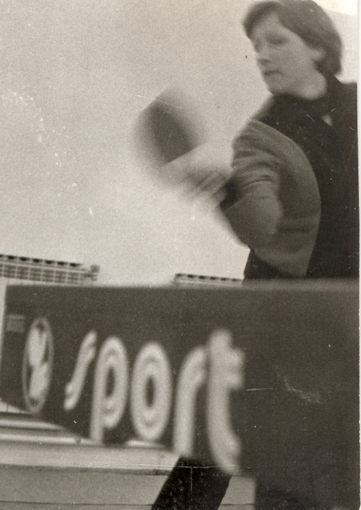

Stolni tenis
ISTAKNUTI SPORTAŠI
Mirko Abramović
(Varaždin, 13. listopada 1924. – Varaždin, 5. studenoga 2004.), stolnim tenisom se bavi od 1939. kao član Slobode. Nakon igračke karijere bavi se trenerskim poslom. Zaslužan je za izum jednog od najvažnijih pomagala pri treniranju stolnog tenisa – robota za izbacivanje stolnoteniskih loptica. Kao svestran sportaš, bavio se i odbojkom, hokejom na ledu i tenisom. Dobitnik je nagrade za životno djelo Zajednice sportskih udruga grada Varaždina.

Anđelka Kozlek
(Varaždin, 1959.), varaždinska stolnotenisačica. Kao članica seniorske momčadi STK Varaždin prvakinja Hrvatske 1981. i 1989.
Dunja Labaš
Maro Prpić
Željka Sakač
Anita Tomašić
Mirjana Vodopija
(Varaždin, 1959.), varaždinska stolnotenisačica